Research
My academic research centers around wireless protocol design and RF detection, with applications in sensor networks, spectrum coordination, wireless security, and even underwater communications.
Frequency Lock Encoding (MS Thesis)
A second stream of data carried in intentional frequency impairments of a wireless signal.
Every wireless receiver estimates and corrects the carrier-frequency offset between itself and the transmitter, caused by oscillator drift, temperature, and Doppler. Losing frequency lock is catastrophic, so protocols provision their synchronization for the worst case. Under ordinary conditions a link uses only a small part of that correction range, and the rest sits unused.
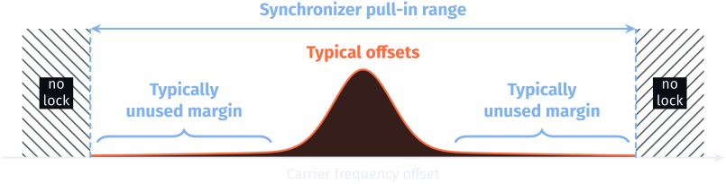
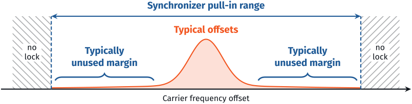
Frequency Lock Encoding (FLE) is a physical-layer subprotocol that converts that unused range into a functional signaling layer. The transmitter adds small, controlled offsets to its carrier frequency, a frequency-shift-keyed stream on top of the primary waveform. A standard receiver corrects them like ordinary drift and decodes its own data as usual. An FLE-aware receiver reads the frequency estimates it already computes and recovers a second, parallel stream, with no extra spectrum, no hardware modifications, and no change to the protocol standard.
- Protocol-agnostic
- Every receiver must estimate carrier frequency to demodulate anything, so FLE works on PLL-tracked single-carrier links, pilot-tracked OFDM, and burst-estimated packets.
- Backward-compatible
- A receiver that has never heard of FLE sees only drift it already corrects. The primary link keeps working, unmodified.
- Opportunistic
- FLE uses only surplus margin. When a link needs its full tracking range, the transmitter backs off or stops.
My MS thesis develops the math behind FLE, tests it in simulation, builds it on software-defined radios, and ports it to commercial Wi-Fi chips. In it, I also present two applications for the technology: UnderTone, a general-purpose FLE link for everyday Wi-Fi devices, and SpectralSeal, which authenticates Wi-Fi access points at the physical layer.
The math
How far the secondary stream can push the carrier before the main receiver notices.


The only change at the transmitter. The usual bandpass signal gains a phase term φ(t). With φ = 0 this is the unmodified primary protocol.
The secondary stream is FSK on the carrier. The phase is the integral of the subprotocol’s own pulse train, scaled by the deviation fd.
What the main receiver pays. The loop’s phase jitter is set by its bandwidth and the link SNR. FLE only has to keep its offsets inside what this loop already tracks.
The secondary stream borrows the link’s SNR. Its SNR scales with the primary’s Eavg/N0, so the two error rates track each other as the link budget changes.
The lock limit. The admissible deviation grows with the square of the loop bandwidth BnTs. Links built for high Doppler or mobility have wide loops, so they carry the most unused margin.
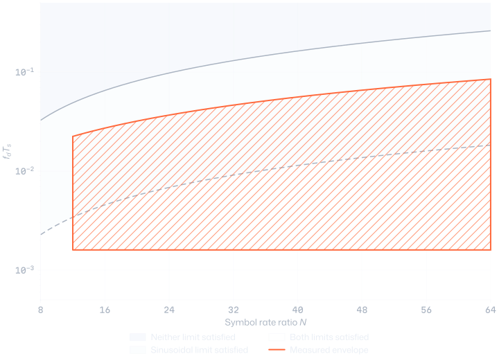
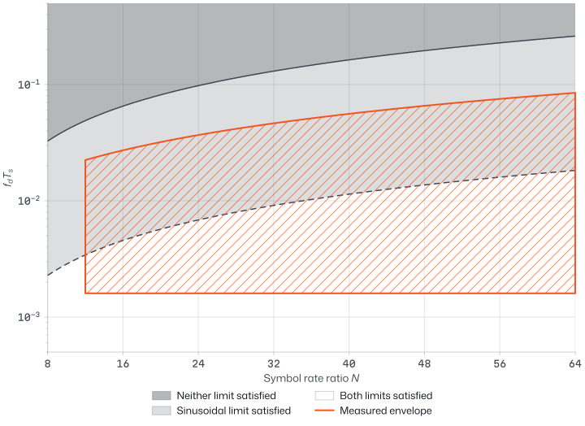
Simulation
Testing whether the main link can tell the secondary stream is there.
I built the full system in GNU Radio and ran tens-of-thousands of simulations, sweeping deviation, symbol-rate ratio, and SNR across additive-noise and multipath fading channels, for both a single-carrier link and 802.11 OFDM. The main link can’t tell the difference: the channel was the only significant factor in its performance, and FLE’s presence was not.
The panel below runs the same mechanism in your browser: a 16-QAM link through a carrier offset that FLE keys between two values, tracked by a decision-directed phase-locked loop.
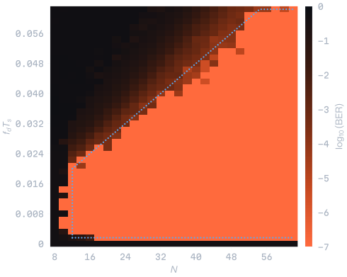
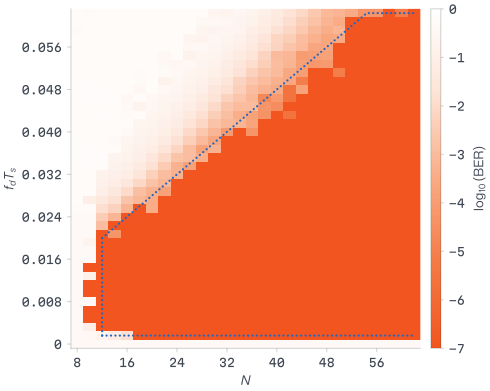
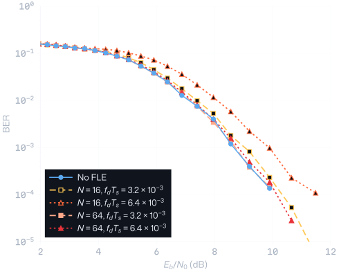
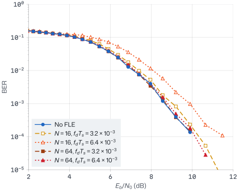
Over the Air
Implementation on software-defined radios, presented at MILCOM ’26.
On the bench, I built the system on an SDR platform and delivered the subprotocol stream at 915 MHz. I presented this analysis, simulation, and initial results at IEEE MILCOM on October 14, 2026.
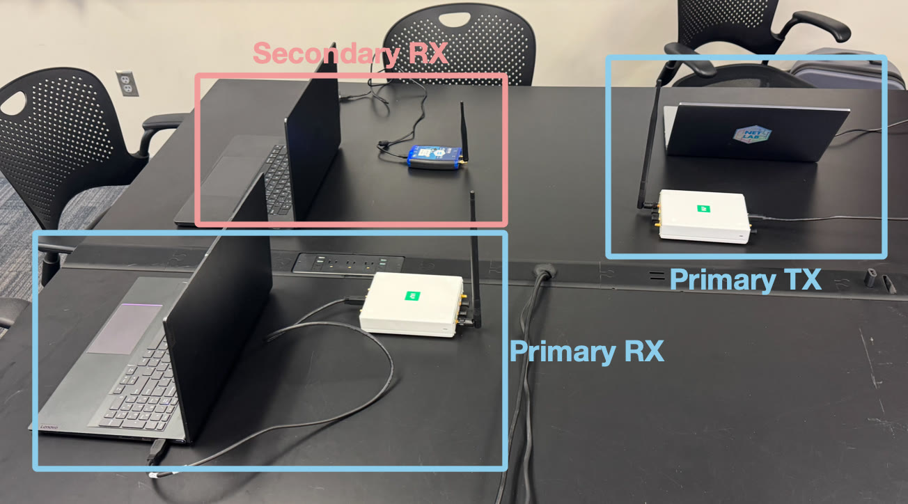
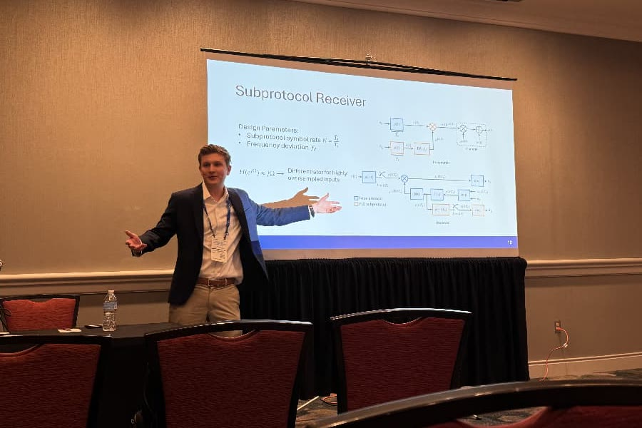
Frequency Lock Encoding
J. Montierth, M. Rice, P. Lundrigan
IEEE MILCOM ’26
From my MILCOM ’26 talk
UnderTone
Frequency Lock Encoding on everyday Wi-Fi chips, at MobiCom ’26.
Software-defined radios make FLE easy; ordinary Wi-Fi chips do not. The ESP32-C5 gives software no access to raw samples or MAC timing, so I mapped two undocumented registers: the frequency synthesizer that tunes its 2.4 and 5 GHz oscillators, used to shift the carrier, and the receiver’s own frequency-offset estimate, used to read it. UnderTone rides on traffic the device was already sending and adds no frames to the air.
The channel this creates is unusual. A frequency reading exists only when the device happens to send a frame, and Wi-Fi traffic is bursty, so errors come from noise in the readings but far more often from erasures: stretches with no traffic and nothing to read. UnderTone is built around that. Each packet opens with a slow, robust binary header that tells the receiver how the rest is sent, and the payload follows at 2, 4, 8, or 16 tones. Symbols with no readings are flagged as erasures rather than guessed, and Reed–Solomon parity fills them in. A rate selector measures the traffic a device is already generating and picks the symbol time and coding that deliver the most data, or holds off when the carrier can’t support it.
Demodulating it took new synchronization, because the readings arrive at irregular times the receiver can’t choose. A conventional timing loop moves the sampling instant, and here there is nothing to move. So I developed timing recovery that slides a candidate symbol grid across the known sync word and keeps the alignment that agrees best, then refines it over the whole buffered packet. For the carrier, a two-sided, decision-directed tracker runs forward and backward over the packet, seeded from the header, and it outperformed one-sided averaging and both first- and second-order PLLs. Each symbol is then decided by majority vote over the readings in its window.
- Modes
- 64 configurations: Four constellation orders across a 30 kHz swing, with symbols from 200 ms down to 25 ms, each paired with one of four coding levels.
- Margin
- Binary FLE outperforms the 802.11 link itself by about 12 dB in terms of signal-to-noise ratio.
- Coexistence
- No statistically significant change in Wi-Fi packet reception on a typical consumer network, and no drift over continuous operation.


UnderTone: Frequency Lock Encoding on COTS Wi-Fi Hardware
J. Montierth, P. Lundrigan
ACM MobiCom ’26, work in progress
SpectralSeal
Telling a real Wi-Fi access point from an impostor.
A rogue access point is a fake Wi-Fi network that copies a real one’s name and password. Phones and laptops join it automatically, and once you’re connected, the attacker sits in the middle of your traffic: it can watch what you do, push fake sign-in pages, and redirect you to look-alike sites. Most consumer Wi-Fi security today can’t tell the two networks apart and proposed and implemented solutions require protocol overhauls, which are difficult to deploy at scale and do not protect legacy devices.
SpectralSeal gives the real access point a signature that can’t be copied, carried in the tiny frequency offsets of the frames it already sends. A phone checks that signature before it joins, so the real network shows up as verified and a copy never does. It can do all this with only software and firmware changes, as CFO tuning and estimation are inherent to the Wi-Fi protocol.
Settings
Wi-Fi
Networks
- Campus Wi-FiCheckingVerified
- Campus Wi-FiCheckingNot verified
- Library Guest
- Cafe Free Wi-Fi
- Printer-4F
- Verified
- The access point’s beacons hash onto today’s published anchor, so this is the real Campus Wi-Fi.
- Not verified
- Same name and same password, but its beacons never add up. The phone can warn you before it ever connects.
- No badge
- Networks without SpectralSeal look exactly as they do today.
Under the hood, SpectralSeal borrows the commitment-then-reveal idea of the TESLA broadcast authentication protocol. Each day the access point picks a random secret, hashes it forward thousands of times into a one-way chain, and publishes only the last value, the anchor. It then reveals the chain backward, one value per 2.5-second beacon, carried with FLE. A phone never knows the next value in advance. Instead, it hashes whatever arrives and checks that the result adds up to the last value it verified, and ultimately to the published anchor. An impostor can’t compute an earlier chain value without inverting SHA-256, and a beacon replayed in a different time slot takes the wrong number of hashes to reach the anchor. Ordinary receivers never see the beacons, the Wi-Fi standard is untouched, and only the access point has to transmit FLE.
Building the chain. H is SHA-256, and c0 is a fresh random secret each day. Only the anchor cK is published.
Checking a beacon. A value received in slot j must reach the anchor in exactly j + 1 hashes. After the first success, each new beacon needs just one hash against the last verified value.
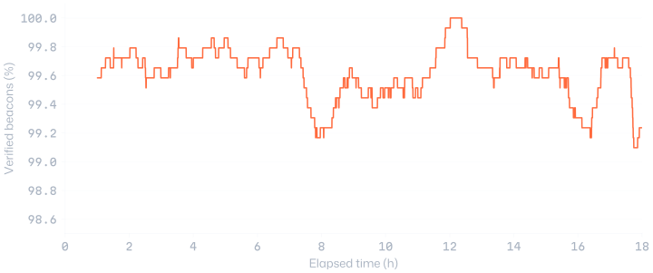
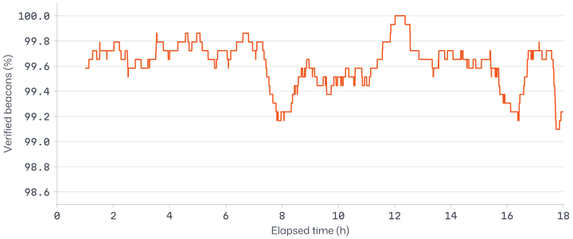
Underwater full duplex
Simultaneous communication in an underwater network.
Autonomous underwater vehicles talk over slow, narrow acoustic links. Because spectrum is scarce, constructing a mesh of underwater nodes remains an open problem in the literature. Instead, we allow two devices to use the same spectrum allocation, by giving each direction its own chirp slope.
Both nodes use LoRa-style chirp spread spectrum in the same 20–30 kHz band: 512 cyclically shifted chirps (spreading factor 9), sampled at 150 kHz, with differential encoding. One node sends up-chirps, and the other sends down-chirps. Dechirping with the matching slope collapses the wanted signal into a single FFT bin, while the opposite-slope signal, including the node’s own transmission, stays spread across the band. The remaining cancellation is minimal: subtract the correlation of the node’s own known preamble, and band-pass filter.
Opposite slopes. Multiplying by the conjugate of one slope turns its chirps into a pure tone and leaves the other slope’s chirps spread across every bin.
I wrote the orthogonal-chirp modem (cyclic chirps, synchronization, and differential encoding) to implement our mesh protocol. The tests ran in an anechoic-lined tank with robotic positioners and calibrated transducers.


Using Orthogonal Chirps Underwater for In-Band, Full-Duplex Communication with Minimal Self-Interference Cancellation
B. Schiel, J. Montierth, E. Blattner, C. E. Dobbs, T. B. Nielsen, P. Lundrigan
ACM WUWNet ’24
NICU localization
Locating staff in a neonatal ICU from Bluetooth signal strength.
Hand-hygiene compliance in a neonatal intensive care unit (NICU) is difficult to measure without cameras or manual staff logging. For BYU’s hand-hygiene research project, this system provides automated monitoring for approximately $1 per unit. Staff wear compact ESP32-based beacons that advertise iBeacon frames, while ESP32-S3 anchors distributed throughout the room perform one-second scans, filter for whitelisted beacons, and transmit received signal strength (RSSI) measurements over Wi-Fi to a Flask server. The server smooths measurements for each beacon–anchor pair and stores them in InfluxDB to power a real-time dashboard.
To achieve this low cost, the system uses Bluetooth Low Energy (BLE) rather than the ultra-wideband (UWB) technology used in more sophisticated systems. However, personnel and medical equipment create a noisy radio environment, and localization errors increase with distance. I addressed this challenge by implementing weighted nonlinear least-squares multilateration using the Gauss–Newton method, initialized at the centroid of the anchors. Each anchor’s residual is weighted according to its measured distance, improving localization robustness in clinical deployments.
Weighted multilateration. ai is anchor i, d̂i is its range from signal strength, and wi is its distance weight.
SARLink
A low-cost ground station that detects radar-imaging satellites as they pass overhead.
I served as lead RF engineer on this BYU capstone project, sponsored by Rincon Research and involving more than 250 hours of product development. Synthetic aperture radar (SAR) satellites, such as Sentinel-1, image the Earth using wideband radar chirps. SARLink detects these and other SAR signals using a single, compact device designed for deployment across a distributed sensor network, enabling real-time detection of spaceborne radar imaging over a given area. The system pairs a Raspberry Pi 5 with a USRP B200mini and custom C- and X-band RF front ends to process raw samples into signal detections, pulse statistics, and satellite pass information, all accessible through a web application.

The detection chain
-
01
Capture
A multithreaded C++ engine streams the USRP continuously at 50 million samples per second and tracks a rolling noise floor. When power rises above the floor by a set margin, it saves the burst with pre- and post-trigger buffers as raw IQ plus a JSON sidecar: true frequency, gain, sample rate, time, and schedule. A TCP control server lets the scheduler retune frequency, gain, and rate without restarting the stream, and an RF switch and LO offset handle bands above and below the downconverter boundary.


A captured burst: three radar chirps sweep through the band. -
02
Dechirp: delayed-conjugate multiplication
A chirp is hard to detect in a spectrogram because its energy is smeared across the band. Multiplying the capture by a conjugated, delayed copy of itself removes the quadratic phase: a linear-FM chirp becomes a single tone whose frequency is the chirp rate times the delay. That gives detection a narrow peak, and gives a chirp-rate estimate for free. We use a delay of 40 samples.


After dechirping, each chirp collapses to a short tone. -
03
Short-time Fourier transform
The dechirped stream goes through an STFT, with 1024-point frames, a Hann window, and 50% overlap, so tones can be located in both time and frequency. Frames are built as strided views over preallocated buffers, so a multi-million-sample capture is processed without copying it.
-
04
Two-dimensional CA-CFAR
A cell-averaging constant-false-alarm-rate detector compares every time–frequency cell with the mean of the training cells around it, skipping a guard region so a tone doesn’t raise its own threshold. Parabolic interpolation then refines the peak frequency between FFT bins, which sets the chirp-rate estimate.


CFAR marks one detection per chirp. -
05
Pulses and PRI
From the dechirped power, we classify each individual pulse, including its length, repetition interval, and chirp rate.
-
06
Passes, storage, and the dashboard
Detections less than a second apart are grouped into satellite passes and written to CSV and PostgreSQL with spectrogram previews. A FastAPI service serves them to a Vue dashboard, and a scheduler rotates the radio through configured frequencies and known passes.
The dashboard we built
Our Vue web app is how an operator uses SARLink: browse detections with their spectrograms and pulse statistics, save the interesting ones, and set what the radio listens to and when. This is the real app, run with simulated detections.